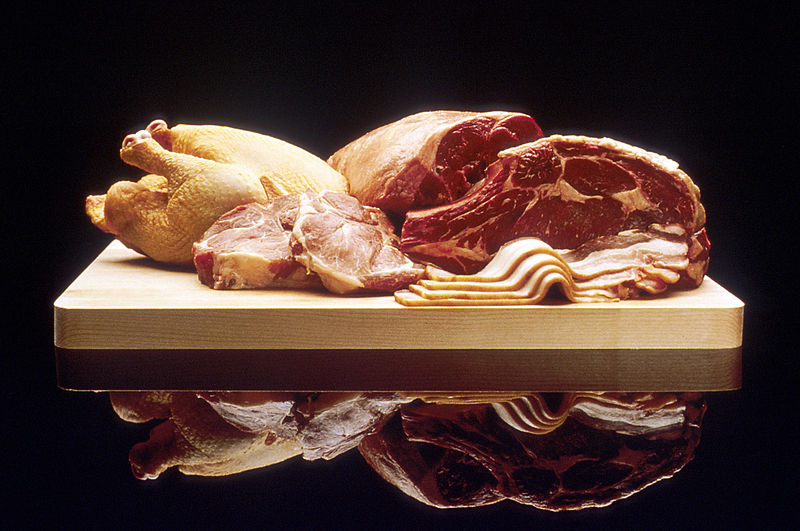
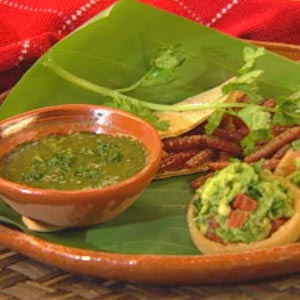
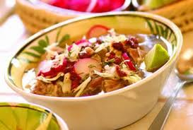

Por eso cuando he preparado esta receta de pizza de colores, he intentado que su aspecto fuera muy apetecible.
Tal como ha quedado, estoy casi seguro de que aunque la cobertura sea sólo a base de verduras, se la comerían hasta los más carnívoros.
Por eso cuando he preparado esta receta de pizza de colores, he intentado que su aspecto fuera muy apetecible.
Tal como ha quedado, estoy casi seguro de que aunque la cobertura sea sólo a base de verduras, se la comerían hasta los más carnívoros.Pizza de colores
Dicen que la comida tiene que entrar por los ojos y yo estoy absolutamente de acuerdo.
Por eso cuando he preparado esta receta de pizza de colores, he intentado que su aspecto fuera muy apetecible.
Tal como ha quedado, estoy casi seguro de que aunque la cobertura sea sólo a base de verduras, se la comerían hasta los más carnívoros.
Ingredientes para 4 personas
• Para la masa: 200 gr de harina de fuerza, 75 ml de leche, 25 gr de mantequilla, 1 yema de huevo, media cucharada de sal y medio sobre de levadura seca de panadería. También podéis utilizar una base de pizza fresca de la zona de refrigerados de las tiendas de alimentación.
• Para el relleno: corazones de alcachofas en conserva, espárragos trigueros, pimientos rojo, amarillo y verde, cebolleta en crudo y rehogada, aceitunas negras, queso mozzarella, salsa de tomate frito, orégano, sal, pimienta y aceite de oliva virgen extra.
Cómo hacer una pizza de colores
Preparamos la masa de pizza mezclando los ingredientes.
Extendemos la masa sobre un papel de hornear o un silpat que pondremos en la bandeja de horno y lo cubrimos con un par de cucharadas de tomate frito.
Distribuimos la mozzarella sobre el tomate, como véis en las fotos. Cortamos los pimientos de colores en trocitos y los colocamos repartiendo bien los colores.
Picamos un trozo de cebolleta en juliana y otro trozo lo cortamos en brunoise muy finito y lo rehogamos en una sartén. Repartimos ambas clases de cebolleta.
Ponemos unos espárragos verdes con las puntas hacia el centro de la pizza y rellenamos los huecos con los corazones de alcachofas cortados en cuartos.
En el centro ponemos un corazón de alcachofa abriéndolo un poco.
Para finalizar, cortamos unas aceitunas negras por la mitad y las distribuimos con un poco de gracia, espolvoreamos con unas hojas de orégano, un poco de pimienta negra y completamos la pizza echando un buen chorro de aceite de oliva. La asamos en el horno precalentado durante unos 15 minutos a 225º, hasta que los bordes se vean bien dorados y con aspecto crujiente.
• Tiempo de elaboración | 1 hora

• Dificultad | Media
Degustación
Esta receta de pizza de colores, la debéis preparar para disfrutar en buena compañía, mientras véis una película de vuestro agrado. Os aseguro que la combinación peli – pizza es una de las más placenteras que podréis encontrar. Para llevarla a la mesa, podéis ponerle unos cogollitos de albahaca pinchados en cada ración, para que suelten su aroma en el momento.
Espaguetis con panceta y salsa de tomate casera
La pasta es uno de mis platos preferidos. Además al ser tan versátil combina muy bien con todo, y con muy pocos ingredientes podemos hacer recetas tan sencillas y ricas como estos espaguetis con panceta y salsa de tomate casera.
Ingredientes para dos personas
• 200 gr de espaguetis, aceite de oliva virgen extra, sal, 2 lonchas de panceta, orégano, albahaca, queso rallado, salsa de tomate casera.
Cómo hacer espaguetis con panceta y salsa de tomate caser
Para cocer la pasta ponemos en una olla alta abundante agua. Cuando comience a hervir echamos un puñadito de sal y cocinamos según las instrucciones del fabricante.
La escurrimos, la pasamos por el chorro de agua fría, y añadimos unas gotas de aceite de olivaque repartimos bien por todos los espaguetis. Reservamos.
Aparte, en una sartén, salteamos unos minutos la panceta troceada. No es necesario añadir aceite ya que la propia panceta tiene grasa y no se pegará.
Calentamos la salsa de tomate.
Colocamos los espaguetis en el fondo del cuenco.
Añadimos salsa de tomate al gusto y por encima la panceta.
Espolvoreamos con orégano y albahaca y acompañamos de queso curado rallado.
Servimos inmediatamente.
•Tiempo de elaboración | 30 minutos>
•Dificultad | Fácil>
Degustación
Me gustan todo tipo de quesos para la pasta, especialmente los quesos fuertes y curados, así que para estos espaguetis con panceta y salsa de tomate casera va fenomenal un queso castellano bien curado de oveja, por ejemplo. Si tenéis prisa, podéis dejar la pasta cocida previamente. Sólo tenéis que ponerle un poco de aceite y taparla bien para que no se reseque.
Ensalada de pasta veraniega
 Esta ensalada de pasta veraniega es una de mis preferidas, ya que aun siendo tan fácil como el resto, es de las más deliciosas por su combinación de ingredientes.
Por supuesto, los ingredientes los podéis ajustar a vuestro gusto, y la cantidad de salsa o aliño es muy personal. Como a la pasta le añadimos sal al cocerla, y el resto de ingredientes ya la contienen en su composición, no añado más al montar la ensalada.
Esta ensalada de pasta veraniega es una de mis preferidas, ya que aun siendo tan fácil como el resto, es de las más deliciosas por su combinación de ingredientes.
Por supuesto, los ingredientes los podéis ajustar a vuestro gusto, y la cantidad de salsa o aliño es muy personal. Como a la pasta le añadimos sal al cocerla, y el resto de ingredientes ya la contienen en su composición, no añado más al montar la ensalada.
Ingredientes para 2 personas
• 200 gr de fusilli, 50 gr de fiambre de pechuga de pavo, 50 gr de bonito del norte en aceite de oliva, 6 aceitunas negras, 6 aceitunas verdes, 3 tomates secos, 1 cucharada de alcaparras, mayonesa, aceite de oliva virgen extra, sal.
Cómo hacer ensalada de pasta veraniega
Cocemos los fusilli en abundante agua hirviendo con sal.
Escurrimos y pasamos la pasta por el chorro de agua fría.
Rociamos con unas gotas de aceite de oliva. Colocamos la pasta en una ensaladera amplia.
Picamos en taquitos regulares el fiambre de pechuga de pavo y lo agregamos a la ensaladera.
Añadimos el bonito, las aceitunas verdes y negras, un poco de mayonesa y mezclamos con cuidado.
Troceamos los tomates secos y los echamos en la ensalada.
Por último, y justo cuando presentemos, añadimos las alcaparras.
Servimos muy fría.
•Tiempo de elaboración | 30 minutos
•Dificultad | Fácil
Degustación
La ensalada de pasta veraniega es perfecta para los días en los que el calor aprieta. Se conserva perfectamente un par de días en perfecto estado, y para los que coméis en la oficina, o estáis ya en la playa, es ideal para llevar en el túper.
Ensalada de pollo con aguacate
 Trozos de pollo, aguacate, pepino y apio, aderezados con una mezcla de crema, mostaza y vinagre. La mezcla se sirve dentro de mitades de aguacate y se adorna con tiritas de lechuga.
Trozos de pollo, aguacate, pepino y apio, aderezados con una mezcla de crema, mostaza y vinagre. La mezcla se sirve dentro de mitades de aguacate y se adorna con tiritas de lechuga.
Ingredientes
Porciones: 4
• 2 cebollas
• 125 ml de vino blanco seco
• 4 granos de pimienta
• Sal
• 4 cucharadas de jugo de limón
• 300 g de filete de pechuga de pollo
• 2 aguacates
• 2 tallos de apio
• 1 pepino chico
• 150 g de crema ácida
• 1 pizca de mostaza gruesa
• 1 a 2 cucharaditas de vinagre de vino blanco
• 1 cucharada de aceite de oliva
• 1 pizca de azúcar
• Pimienta molida
• 1 pizca de pimienta de Cayena
• Aprox. 10 hojas de lechuga acedera
Modo de preparación
Preparación: 35min › Listo en:35min
1. Pela las cebollas y pártelas en cuatro. Hiérvelas en una olla con vino blanco, 150 ml de agua, granos de pimienta, sal y 1 cucharada de jugo de limón. Agrega la pechuga de pollo y deja hervir. Cocina la carne a fuego lento por 15 minutos hasta que se cueza. Retira la olla de la estufa y deja que se enfríe.
2. Parte los aguacates a la mitad, quítales el hueso y añade de 4 a 5 cucharaditas de aguacate a la carne. Vacía una cucharada de jugo de limón en un recipiente. Vierte gotas de jugo de limón en las mitades de aguacate.
3. Lava los tallos de apio y parte en trozos o cuadros. Pela el pepino y pártelo a la mitad y a lo largo. Quita las semillas con una cucharita y parte el pepino en cuadritos. Deja escurrir la pechuga de pollo y parte en cuadros de 1.5 cm. Agrega los cuadros de pechuga con el apio y los pepinos a los cuadritos de aguacate y mezcla.
4. Para el aderezo, mezcla en un recipiente crema ácida, mostaza, vinagre y pimienta, bate bien hasta obtener una crema uniforme. Mezcla el aderezo con la carne y verduras. Sazona con sal y pimienta y vacía en las mitades de aguacate.
5. Espolvorea un poco de pimienta de Cayena sobre los aguacates rellenos. Lava y limpia la lechuga acedera, corta en tiras finas y con ella adorna los aguacates.
Una sugerencia
Sirve los restos de la ensalada de pollo junto con los aguacates, o guarda para el siguiente día y sirve junto con pasta en forma de conchas como aperitivo.
Ensalada de arroz con pollo y camarones
 Casi como una ensalada de paella. El arroz se cuece con azafrán y se marina en una especie de vinagreta de limón. Se sirve con trozos de pechuga de pollo y camarones.
Casi como una ensalada de paella. El arroz se cuece con azafrán y se marina en una especie de vinagreta de limón. Se sirve con trozos de pechuga de pollo y camarones.
Ingredientes
Porciones: 4
• 3 cucharadas de aceite de oliva
• 200 g de arroz tipo paella o risotto
• 2 bolsitas de azafrán molido (de 0.1 g c/u)
• 50 ml de vino blanco seco
• 400 ml de caldo de pollo
• 1 hoja de laurel
• 100 g de chícharos verdes
• 100 g ejotes
• 3 cucharadas de jugo de limón
• 2 cucharadas de vinagre de jerez
• Sal, pimienta negra recién molida
• 1 pimiento rojo, 2 jitomates
• 2 corazones grandes de lechuga orejona
• Pollo y camarones
• 250 g de pechuga de pollo
• 12 camarones de tamaño mediano
• 2 dientes de ajo
• 2 cucharadas de jugo de limón
• 1 cucharada de aceite de oliva
• Sal, pimienta negra recién molida
• Octavos de limón para adornar
Modo de preparación
Preparación: 1hora45min › Listo en:1hora45min
1. Calienta en una olla 1 y 1/2 cucharadas de aceite de oliva. Agrega el arroz y el azafrán y cuece hasta acitronar, removiéndolo todo el tiempo. Añade el vino, el caldo, 50 ml de agua y la hoja de laurel y deja hervir todo. Agrega los chícharos y los ejotes al arroz.
2. Para preparar la marinada mezcla 1 y 1/2 cucharadas de aceite de oliva con el jugo de limón y el vinagre de jerez y bate bien. Sazona con sal y pimienta. Afloja el arroz y viértelo en un tazón. Vierte la marinada al arroz y mezcla. Deja marinar durante una hora.
3. Corta las pechugas en tiras de un cm de ancho, pela y limpia los camarones (ver las fotos). Pela el ajo y córtalo en rodajas delgadas. Mezcla la pechuga, los camarones, el ajo y una cucharada de aceite de oliva.
Vinagre de jerez
El sabor del vinagre de jerez es suave pero aromático. Se prepara con uvas de jerez y se fermenta en barricas de roble. Desde la ensalada de lechuga hasta ensaladas de pescado, y ensaladas de verduras o de carne con vinagre de jerez, todas obtienen un rasgo muy aromático y sabroso.
Cómo pelar camarones
Retira primero la cabeza girándola. Luego toma el camarón sujetándole la cola con la otra mano y mete tu pulgar bajo la cáscara para separarla.
Elabora un pequeño corte con un cuchillo filoso en el lomo del camarón y con el mismo cuchillo, o con un dedo, retira las tripas negras.
Lava los camarones al chorro de agua y sécalos con toallas de papel.
Después prepáralos como se describe en la receta.
Lava el pimiento y pártelo en cuadros. Calienta ligeramente los jitomates y retírales la cáscara, pártelos a la mitad, quítales las semillas y córtalos en cuadros.
Coloca sal y pimienta a la ensalada de arroz, añade el pimiento y los jitomates.
Lava los corazones de la lechuga orejona, sacúdelos para que se sequen y separa las hojas.
Calienta en un sartén 3 cucharadas de aceite, fríe ligeramente por ambos lados las tiras de pechuga con el ajo.
Añade los camarones y también fríelos ligeramente.
Retira el ajo y sigue friendo hasta que todo esté cocido.
Coloca en un plato grande las hojas de la lechuga y distribuye en él la ensalada de arroz con el pollo y los camarones.
Sirve.
Ensalada de arroz con hongos
Prepara 200 g de arroz como se describe en la receta principal, sin azafrán ni caldo de pollo, pero con caldo de verduras.
Prepara el arroz con una marinada de 3 cucharadas de pesto verde, 2 cucharadas de vinagre de vino blanco, 2 cucharadas de aceite de oliva y sazona con sal y pimienta.
Lava 2 calabazas delgadas y pártelas a lo largo en cuatro, luego córtalas en trozos de 3 cm de largo.
Lava 1/2 manojo de perejil, sécalo y pícalo finamente.
Mezcla la ensalada con las calabazas y el perejil; sazona.
Limpia 300 a 400 g de hongos y córtalos en tiras.
Calienta 3 cucharadas de aceite de oliva en un sartén y fríe los hongos por un rato.
Pela un diente de ajo y exprime el jugo a los hongos y fríe.
Vierte 100 ml de vino blanco seco.
Sazona con sal y pimienta y deja que se consuma el vino mientras remueves los hongos.
Distribuye las hojas de lechuga en 4 platos, sirve sobre ellas la ensalada y agrega los hongos fritos.
Sirve.
Una sugerencia:
En lugar de camarones también puedes usar calamares. Es una deliciosa alternativa para las personas que deben controlar sus niveles de colesterol. También son buenos el salmón o el pez espada en cuadros asados.
Receta de Ensalada nizarda tradicional
 Ensalada de lechuga con atún, huevos cocidos y anchoas. Originaria de Niza, Francia, en donde se conoce como "ensalada niçoise". Originalmente, esta ensalada se preparaba para los pescadores que regresaban del mar. Es saludable y deliciosa, pero también llenadora, económica y rápida de preparar.
Ensalada de lechuga con atún, huevos cocidos y anchoas. Originaria de Niza, Francia, en donde se conoce como "ensalada niçoise". Originalmente, esta ensalada se preparaba para los pescadores que regresaban del mar. Es saludable y deliciosa, pero también llenadora, económica y rápida de preparar.
Ingredientes
Porciones: 6
• Vinagreta
• 1 1/2 cucharadas de vinagre de vino tinto
• 6 cucharadas de aceite de oliva
• Sal y pimienta negra recién molida, al gusto
• 1 pizca de romero seco (opcional)
• Ensalada
• 2 corazones de lechuga orejona
• 1 lata (140 gramos) de atún en agua, escurrido y desmenuzado
• 1 cebolla morada pequeña, rebanada en medias lunas
• 12 aceitunas negras, deshuesadas
• 1 pimiento morrón verde pequeño, sin semillas y en rajas delgadas
• 1 pimiento morrón rojo pequeño, sin semillas y en rajas delgadas
• 3 jitomates maduros, cuarteados
• 3 huevos cocidos duros, pelados y cortados a la mitad
• 6 filetes de anchoa
• 3 o 4 ramitas de perejil fresco, picado
Modo de preparación
Preparación: 15min › Listo en:15min
1. Mezcla todos los ingredientes de la vinagreta en un tazón y mezcla muy bien.
2. Acomoda las hojas de la lechuga alrededor de un platón. Distribuye encima el atún, luego las rebanadas de cebolla, aceitunas y rajas de pimiento morrón. Acomoda las mitades de huevo sobre las orillas de la lechuga, luego coloca los trozos de jitomate intercalados entre las mitades de huevo. Forma una "estrella" con las anchoas en el centro de la ensalada.
3. Rocía la ensalada con la vinagreta antes de servir. Espolvorea con el perejil.
Postres
Flan al caramelo

Ingredientes
4 flanes grandes
230g de leche condensada
230g de leche
3 huevos
1 yema de huevo
Esencia de vainilla
Azúcar para el caramelo
Procedimiento
Encienda el horno a 180°C.
Haga un caramelo con el azúcar.
Disponga en los moldes.
Una el resto de los ingredientes y vierta en moldes para flanes.
Ponga a cocinar los flanes a baño María durante 40 minutos aproximadamente
Mousse de Chocolate
Ingredientes
6 raciones
<200g de chocolate negro en tableta2 cdas de coñac
La clara de 3 huevos grandes
50g de azúcar extrafino rubio
100ml de nata montada o casi montada
Para servir
Azúcar glasé para espolvorear
Galletas crujientes (lenguas de gato por ejemplo)
Procedimiento
1. Trocear 150ml de chocolate y fundirlo a baño María. Retirar la cacerola del fuego y, manteniendo la misma en contacto con el agua, verter el coñac y remover. Rallar el chocolate restante y reservar.
2. Batir las claras a punto de nieve. Incorporar el azúcar, cucharada a cucharada, para obtener un merengue lustroso. Retirar el chocolate de la cacerola y añadir 1 cucharada colmada de merengue con movimientos envolventes, añadir el chocolate en el merengue y envolver suave y constantemente. Agregar la nata montada y dos terceras partes del chocolate rallado con el mismo movimiento. Dividir en 6 tazas y enfriar 2 horas o toda la noche.
3. Servir cubierto de chocolate rallado restante
Souffle de Chocolate caliente
Ingredientes
6 porciones
2 cdas de almendras molidas
150g de chocolate negro troceado
4 cdas de café solo o licor de café
2 cditas de harina
100g de azúcar extrafino
4 huevos grandes, separadas las claras de las yemas
Helado de vainilla para servir
Para la Salsa
150ml de nata liquida
100g de chocolate negro troceado
2 cdas de café solo, o licor de café
Procedimiento
1. Precalentar el horno a 190°C. Engrasar seis moldes para soufflé de 200ml y repartir las almendras.
2. Fundir el chocolate con el café y dejar enfriar. Incorporar la harina, la mitad del azúcar y las yemas. Batir las claras a punto de nieve e ir añadiendo el azúcar restante. Mezclar con el chocolate con movimientos envolventes y volcarlo en moldes. (cubrir los suflés con papel aluminio y reservarlos 1 hora.)
3. Cocer la masa hasta que haya subido y la corteza este firme. Para hacer la salsa escaldar la nata en una cazuela, retirarla del fuego, añadirle el chocolate, remover y verter el café.
4. Cortar la parte superior de cada suflé, agregar una bola de helado, rociar la salsa.
QUE ES LA CARNE?
La carne es el tejido animal, principalmente muscular, que se consume como alimento. Se trata de una clasificación coloquial y comercial que sólo se aplica a animales terrestres normalmente vertebrados: mamíferos, aves y reptiles, pues, a pesar de poder aplicarse tal definición a los animales marinos, estos entran en la categoría de pescado, especialmente los peces los crustáceos, moluscos y otros grupos suelen recibir el nombre de marisco. Más allá de su correcta clasificación biológica, otros animales, como los mamíferos marinos, se han considerado a veces carne y a veces pescado.
TIPOS DE CARNE
Existen muchas variedades de carnes procedentes de muchas localidades, se puede decir que la mayoría del consumo mundial de carne procede de la carne de animales domesticados para abastecer de materia prima la industria cárnica.

Una de las primeras razas domésticas que pudieron abastecer al hombre de sus necesidades cárnicas pudo haber sido el uro que se extendió a lo largo de Eurasia. En el siglo XVII algunos ganaderos de Europa empezaron a seleccionar diversas razas bovinas para mejorar ciertas cualidades como su leche, la capacidad y resistencia ante el trabajo agrícola, la calidad de la carne, etc. De esta forma existen hoy en día razas como la francesa Charolesa y Limousin, la italiana Chianina (de tamaño inmenso), las inglesas de Hereford y Shorthorn. En Estados Unidos existen razas autóctonas que proporcionan una carne con sebo entrevatado y que suelen proceder de animales sacrificados a la edad de 15 a 24 meses, este tipo de carne es entendido como de buena calidad por el consumidor medio estadounidense. En Japón existen razas como la wagyu de carne entrevetada, algunas de estas carnes se cortan en finos filetes de 1,5 a 2 mm y se elaboran platos como el sukiyaki y el shabu shabu.

La carne de cordero es muy aceptada en las diversas culturas de la tierra; posiblemente fuera la oveja uno de los primeros animales en ser domesticados por el hombre (tras el perro y el uro) y es muy valorada por la producción de lana (casi un 10% de las razas la producen) y leche (empleada en la elaboración queso).

Los cerdos son descendientes del jabalí salvaje euroasiático. Si la carne de vaca ha sido la predilección de muchos habitantes de Europa y América, la carne de cerdo es la que más porcentaje de población ha alimentado en el resto del mundo, en algunos países como China la palabra "cerdo" es entendida como un significado genérico de "carne". Posee su ganadería algunas ventajas: es relativamente pequeño, es omnívoro, tiene un ratio de crecimiento bastante bueno comparado con otros animales y se consume casi todas las partes de su organismo. Se dedica en exclusiva a la producción de carne

Entre la carne de aves (denominada a veces como volatería) se encuentra la de aves de corral como puede ser la de gallina (su cuidado proporciona también huevos); el pato que se consume en dos etapas: en el huevo germinado tal y como lo hacen en Filipinas en el balut, o en un adulto de 6 a 16 semanas; pavo que se pueden cuidar ejemplares en un rango de 6-9 kg para el consumo humano entre 12 y 18 semanas mientras que en EE. UU. se llega extender el periodo hasta 32 semanas para adquirir ejemplares inmensos; el ganso, codorniz, perdiz, la paloma, etc. todos ellos animales domesticados que producen además huevos. Gran parte de las variedades existentes de gallinas están adaptadas y seleccionadas para proporcionar grandes rendimientos en el crecimiento.
En diferentes culturas el tipo de consumo de carne varía mucho, el concepto habitual es relativo y está relacionado con las costumbres culinarias del lugar, la disponibilidad del animal, las tradiciones sociológicas, etc. En la cocina occidental no se realizan ciertas preparaciones por ser "poco habituales" o por ser una práctica ya abandonada, o muy localizada de ciertas áreas.


COCINA revolviendo el tocino en una sartén grande a fuego medio, hasta que esté crujiente. Sácalo de la sartén con una cuchara ranurada sin deshacerte de la grasa en la sartén; reserva el tocino. Cocina los plátanos en la sartén revolviéndolos durante 5 min. o hasta que se doren. Transfiérelos a un tazón.
DORA la carne molida en la sartén. Incorpórale 1/4 taza de la salsa de tomate. Cuando hierva, retira la sartén del fuego. Agrega el tocino, los plátanos y 3/4 taza del queso; rellena con esta mezcla los chiles. Ponlo en un molde de 13x9 pulgs. Ponle encima la salsa de tomate y el queso restantes.
HORNEA los chiles 15 min. o hasta que estén bien calientes y se haya derretido el queso. Sírvelos con copos de crema agria.
DORA la carne con el pimiento, la zanahoria, la cebolla y el ajo en una sartén grande antiadherente. Añade los tomates, la salsa y el comino; mezcla todo bien. Tapa la sartén; cocina, manteniendo un hervor suave durante 5 min. Retira la sartén del fuego. Incorpora los granos de elote a la mezcla.
ESPARCE 2 tazas de la mezcla de tomate sobre el fondo de una fuente para hornear de 13x9 pulgs.; pon encima 4 mitades de tortillas con los lados cortados hacia el costado de la fuente. Cubre esto con capas de la mitad de los frijoles, 2-1/2 tazas de la mezcla de tomate restante y 1/2 taza del queso. Repite las capas. Pon encima las tortillas, la mezcla de tomate y el queso restantes; tapa la fuente con una hoja de papel aluminio, rociada con aceite en aerosol.
HORNEA de 35 a 40 min. o hasta que esté completamente caliente; recuerda quitar el papel aluminio durante los últimos 5 min. Deja reposar el horneado 5 min. antes de cortarlo para servir.
¿que es la sopa?
Una sopa es una preparación culinaria que consiste en un líquido con sustancia y sabor. Ocasionalmente se mezcla la sopa con pipa. En algunos casos posee ingredientes sólidos de pequeño tamaño sumergidos en su volumen. Una de sus características principales es que se ingiere con cuchara. Si no tuviera ingredientes sólidos (vegetales o productos cárnicos) se considera un caldo alimenticio, base de todas las sopas. Si se clarifica será un consomé. La sopa suele proceder de una preparación culinaria con evaporación, como es el cocido, o mediante retención de vapores: estofado. Tradicionalmente, se puede espesar añadiendo al final de la cocción pan o cereales como el arroz, fideos o pasta menuda. Se suele servir generalmente al inicio de cada comida. La primera clasificación suele hacerse en función de la temperatura de servir, es decir en sopas frías, o sopas calientes.
Dificultad: Alta -- Plato de la cocina tradicional catalana, originario de Gerona. Es un plato casero y una manera que se tenía en los pueblos de la Costa Brava de economizar, pues con una langosta se hacían dos platos: 1º la sopa y de 2º se comían la cola de langosta con una salsa fría.


Los cócteles son preparados que se realizan a base de una mezcla de diferentes tipos de bebidas. En la gran mayoría de los casos están formados por uno o más tipos de bebidas alcohólicas. La coctelería se ha convertido casi en una ciencia que cada día suma más seguidores.
3 onzas de crema de coco
3 onzas de jugo de piña
1 1/4 onzas de ron
1 rebanada de piña
En una licuadora mezcle todos los ingredientes y 1 taza de hielo (menos la rodaja de piña).
Sirva en un vaso alto y decore con la rodaja de piña.
1 1/2 tazas de jugo de limón fresco
1 1/2 tazas de tequila
1 1/2 de taza de licor de naranja (ej. Cointreau® o Controy®)
1 limón, cortado en 8 gajos
Sal de grano, al gustoMezcla el agua, jugo de limón, tequila y licor de naranja en una jarra de 2 litros. Mezcla bien.
Para servir, humedece el borde de una copa de margarita con limón y escarcha con la sal. Pon el hielo dentro de la copa y vierte la margarita encima. Decora con una rodaja de limón.
* 2 onzas de tequila
* 1 onza de ron blanco
* 3 onzas de jugo de naranja
Preparar en copa de coctel con el borde escarchado de azúcar corriente, preferentemente morena.
Colocar 1 ó 2 cubos de hielo y verter en orden el tequila, el ron y el jugo.
Decorar con una rodaja de naranja y una cereza roja.
6 quesitos redondos,
3 aceitunas negras sin hueso,
colorante rojo y unas gotas de salsa kétchup.
Empezamos dibujando, con la ayuda de un pincel fino, las venitas en los quesitos con el colorante rojo. Mientras el colorante rojo se seca, vamos laminando las aceitunas negras deshuesadas.
Colocamos un aro de aceituna sobre cada quesito, en el centro y, por último, cubrimos el centro de cada aro con unas gotas de kétchup
Para los cuerpos: 125 g de queso crema, 100 g de queso rallado, 1/2 cucharadita de mostaza, 1/2 cucharadita de orégano, 1/4 cucharadita de pimentón, una pizca de ajo granulado, pimienta negra al gusto.
Para la decoración: 100-125 g de queso rallado, palitos salados, lonchas de queso blanco, aceitunas negras, un poco de queso crema extra, rotulador negro comestible (opcional).
Disponer el queso crema en un cuenco, procurando no echar nada de líquido de suero, si lo tuviera. Añadir el queso rallado, la mostaza, el orégano, el pimentón, el ajo granulado y pimienta negra recién molida al gusto. Mezclar todo bien hasta conseguir una masa homogénea.
Colocar el resto del queso rallado en otro recipiente. Con ayuda de unas cucharillas, tomar porciones de masa, dar forma redondeada y rebozar bien en el queso rallado. Darle la forma deseada y disponerlo en una bandeja o plato aparte. Partir palitos salados de aperitivo hasta dejar la longitud necesaria y pinchar dos o tres en la parte superior.
Recortar las bocas con un buen cuchillo afilado a partir de aceitunas negras. Recortar pequeños círculos de la loncha de queso, con un mini cortador si lo tuviéramos una boquilla redonda, o a mano con un cuchillo. Colorear el centro con un rotulador comestible. Si no tenemos rotulador, podemos recortar un trocito de aceituna y pegarla. Pegar los ojos a los palitos y las aceitunas al cuerpo, usando un poco de queso crema extra.

12 langostinos crudos,
1 huevo, copos de maíz,
pan rallado y aceite de oliva.
Además necesitaréis brochetas de madera.
Comenzamos preparando los copos de maíz para facilitar el empanado. Con un robot de cocina, damos dos o tres toques para triturarlos ligeramente y los mezclamos con el pan rallado, dejando lista la mezcla en un plato para cuando tengamos listos los langostinos.
Para dejar preparados los langostinos, retiramos la cabeza y los pelamos dejando sin quitar la cola para que tengan mejor aspecto. Aprovechamos para quitarles el intestino —esa especie de hilillo negro—.
Para evitar que se encojan al freírlos, los ensartamos en brochetas de madera que les hagan mantener su forma estirada. Después de ensartarlos, cortamos el exceso de brocheta y los sazonamos con un poco de sal.
Finalmente los pasamos por huevo batido y los empanamos con los copos de maíz que habíamos machacado y los freímos en aceite muy caliente para que se doren sin resecarse en el interior. Los escurrimos en papel de cocina y los servimos inmediatamente. Si los queréis congelar, hacedlo una vez empanados pero antes de freírlos.
Las hamburguesas son carne picada comprimida con forma de disco y que, habitualmente, se sirven entre dos panes con verduras y condimentos a gusto. Las hamburguesas son originarias, por supuesto, de Hamburgo, Alemania. Con la gran cantidad de inmigrantes alemanes en tierras norteamericanas, las hamburguesas se hicieron cada vez más populares hasta llegar a ser uno de los 10 platos más famosos del mundo.
Este es uno de los platos más antiguos de la historia. La lasaña es un plato originario del sur de Italia que consta en varias capas de masa básica y entre éstas tradicionalmente se agrega espinaca, carne picada, ricota, salsa de tomate y queso parmesano. Si bien este es el relleno más tradicional de la lasaña, hay muchas variaciones de éste plato, existe la lasaña vegetariana, lasaña dulce, de jamón y queso e innumerables variaciones más.
Este platillo originario de China ha logrado un lugar en muchas regiones orientales y también occidentales. Consiste en carne casi siempre de cerdo o pollo (aunque algunas veces también se hace con carne de pecado), huevos salteados junto con vegetales como repollo y apio. Para cocinar los ingredientes se utiliza un wok, que es una especie de sartén grande y cóncavo. Para darle más sabor, se condimenta con salsa de soja, muy típica de la cocina oriental.
 La palabra pizza proviene del latín pinsere, que significa presionar. Seguramente te sorprenda saber que esta comida no es originaria de italia, sino que sus orígenes se encuentran en la antigua Grecia, donde se solía cubrir el pan pita con aceites, hierbas y quesos, aunque claro, prontamente los italianos adoptaron la receta y la perfeccionaron hasta lo que hoy en día llamamos pizza.
center>
La palabra pizza proviene del latín pinsere, que significa presionar. Seguramente te sorprenda saber que esta comida no es originaria de italia, sino que sus orígenes se encuentran en la antigua Grecia, donde se solía cubrir el pan pita con aceites, hierbas y quesos, aunque claro, prontamente los italianos adoptaron la receta y la perfeccionaron hasta lo que hoy en día llamamos pizza.
center>
El sushi es una comida tradicional de Japón que ha logrado dar la vuelta al mundo. Esta comida se basa en arroz cocido con vinagre y en el centro de éste una pieza de pescado crudo o algún fruto del mar. La palabra sushi puede ser traducida al español como “gusto agrio”.
 En México las personas fríen los gusanos de maguey (amarillos y gorditos) con manteca y los sirven en tacos con salsa picante. Se dice que son deliciosos.?
 En Indonesia los fríen en aceite hirviendo y los sirven como pasabolas.
En Indonesia los fríen en aceite hirviendo y los sirven como pasabolas.
 En México se comen los hongos del maíz como una delicia culinaria. Su único problema es la apariencia, porque de sabor parecen pasar la prueba.
En México se comen los hongos del maíz como una delicia culinaria. Su único problema es la apariencia, porque de sabor parecen pasar la prueba.
 Aparentemente en este país africano es muy común consumir orugas y diversos insectos; sin embargo, el plato más conocido es este guiso.
Aparentemente en este país africano es muy común consumir orugas y diversos insectos; sin embargo, el plato más conocido es este guiso.
 Dicen que los grillos tienen un alto nivel de proteínas y bajo contenido en grasas saturadas, lo cual los hace muy saludables. Para preparar este plato, se cocinan estos insectos en el horno hasta que están crujientes y se los coloca luego en una taza con curry. ?
Dicen que los grillos tienen un alto nivel de proteínas y bajo contenido en grasas saturadas, lo cual los hace muy saludables. Para preparar este plato, se cocinan estos insectos en el horno hasta que están crujientes y se los coloca luego en una taza con curry. ?

Ingredientes
Porciones: 6
1 cucharada de aceite vegetal
1 1/2 kilos de cabeza de lomo de puerco en cubos de 2 centímetros
3 tazas de jugo fresco de naranja dulce
100 gramos de chiles guajillos de los que no pican, desvenados y remojados
1 taza de vinagre
1 cabeza de ajos, pelados
1/2 barra (50 gramos) de achiote
Sal, al gusto
Salsa
1 cebolla morada, rebanada
10 chiles habaneros (o al gusto), rebanados
20 limones agrios, su jugo
Sal, al gusto

INGREDIENTES
(Para 6 personas)
1 cabrito entre 18 y 21 días de nacido partido en trozos. Se pide el espinazo aparte, cortado en pedazos chicos
250 gramos de manteca de puerco
El jugo de 6 naranjas
Sal de ajo
Para la salsa martajada:
1 cucharada de manteca de puerco
1 cebolla finamente picada
6 chiles serranos picados
4 jitomates despepitados y picados
½ taza de cerveza
1 manojito de cilantro picado toscamente
Sal al gusto

Ingredientes
Porciones: 8
1 kilo de maíz para pozole, pre-cocido
1 cabeza de ajo
Sal al gusto
1 kilo de carne de puerco, en trozos medianos
1 jitomate grande
100 gramos de chile mirasol
1 pizca de orégano
1 cucharadita de cominos
1 diente de ajo
Ingredientes
Porciones: 8
9 litros de agua, divididos
1 1/4 kilo de menudo de res
6 dientes de ajo, picados finamente
1 cebolla grande, picada finamente
1 1/2 cucharadas de sal
2 cucharada de pimienta negra molida
1 1/2 cucharada de orégano seco
2 cucharadas de chile en polvo
5 chiles de árbol
6 chiles japoneses, sin semillas
1 kilo de maíz pozolero precocido
1/2 cebolla, picada
1/4 taza cilantro fresco, picado
2 limones grandes, en trozos center>

Ingredientes
Porciones: 6
1 kilo de espinazo de res, o carne para cocido de res
1 chamorro de cerdo, en trozos
½ cebolla
1 diente de ajo
2 ramas de epazote
2 cucharadas de consomé de pollo en polvo
1 jitomate grande
1 chile ancho, sin venas ni semillas
1 chile pasilla, sin venas ni semillas
1 clavo
3 pimientas
1 rama chica de canela
1 pizca de orégano
1 pizca de comino
1 ½ cucharadas de harina o fécula de maíz
6 calabacitas chicas, en cubos
2 elotes, en 3 rebanadas cada uno
Sal, al gusto
Cebolla picada
Limones